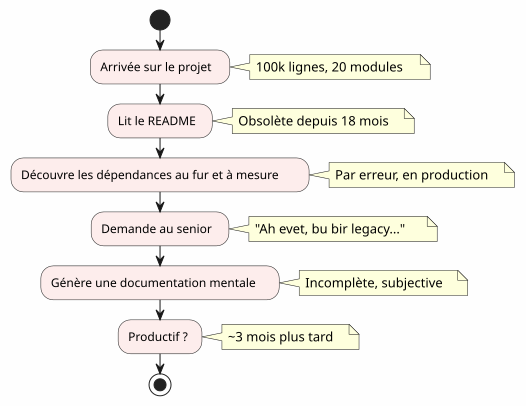
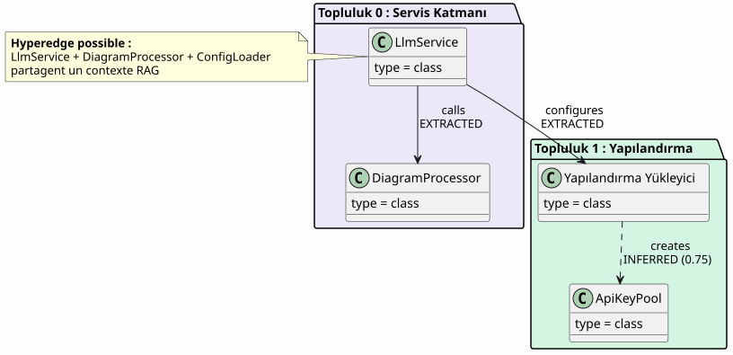
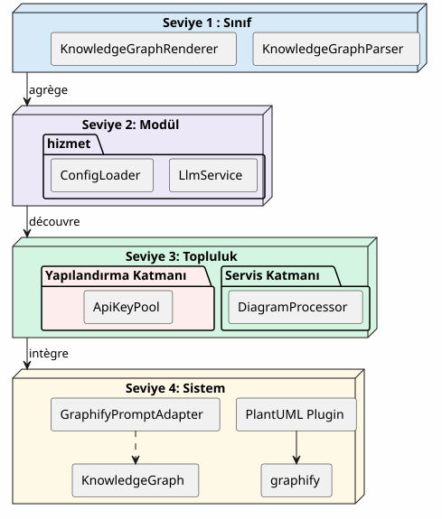
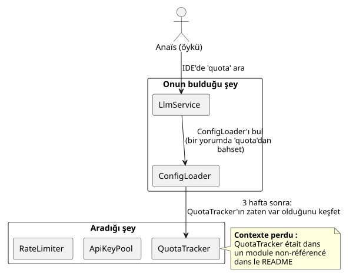
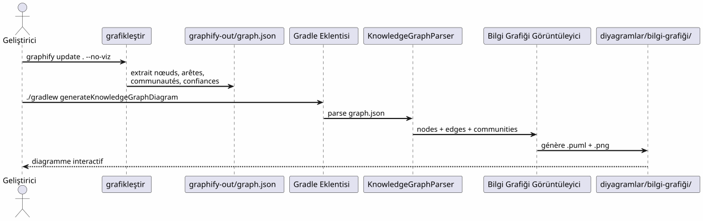
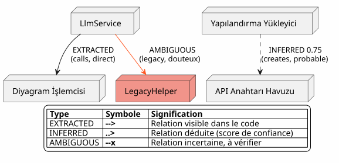
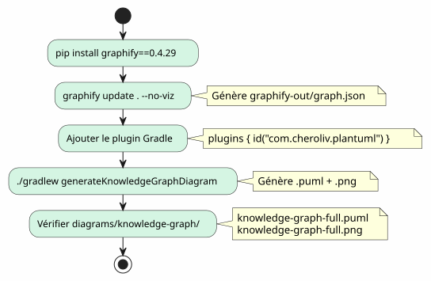
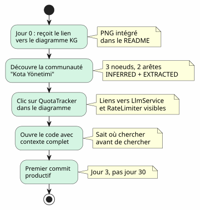
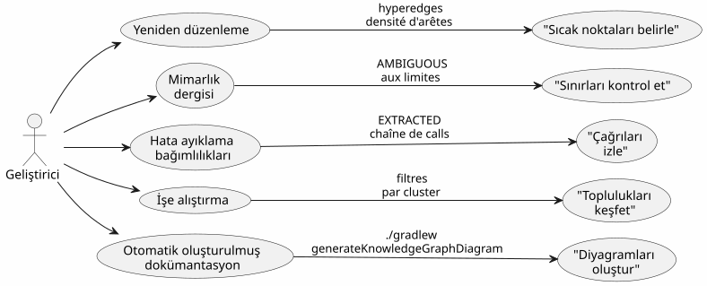

Knowledge Graph, kod tabanı anlaşımı için bir araçtır
Yayınlandı: 20 April 2027
- Onboarding duvarı
- Knowledge Graph nedir?
- Anlamanın 4 seviyesi
- Kayıp bağlam: somut bir senaryo
- Pipeline : tek komutla menüye göre kod
- Kenar tipleri: güvenin söylediği
- Kendi Knowledge Graph’ınızı oluşturmak için 5 dakika
- Onboarding için değer: güncellenmiş Anais senaryosu
- Günlük navigasyon için değer
- Sınırlar ve Perspektifler
- Sonuç
100.000 satırlık bir projeye geliyorsunuz. Yirmi modül, yüz sınıf, görünmez bağımlılıklar, unutulan yeniden yapılandırmalar geçmişi. README, mimariyi 'microservices' olarak vaat ediyor ama kod başka bir şey anlatıyor. Ürünlü olmak için ne kadar zaman gerekir?Üç ay— Eğer şanslıysanız. Ve eğer kodun etkileşimli haritası, otomatik olarak üretildiğinde, bunu üç gün olarak azaltabilseydi ?
- tik
-
[]
Onboarding duvarı
Her geliştirici bu sahneyi yaşamış:
-
1. Gün: README’i gösteriyoruz (son güncelleme: 18 ay önce)
-
Gün 3: modülü keşfediyorsunuz.
billing`modülü gizlice çağırır`notification -
Gün 7 : bir seniör size "Evet, bu sınıf aslında iki şey yapar, onu bölmek için planlamıştık" der.
-
14. Gün: tüm iş zekâsının içinde olduğunu fark edersiniz`utils/LegacyHelper.java`— hiçbir yerde referans gösterilmemiş bir dosya

Sorun dokümantasyonun eksikliği değil — okart eksikliği. Gerçek bölgeyi gösteren, son tasarımın hayali bölgesini göstermeyen bir harita.
Knowledge Graph nedir?
Bir Knowledge Graph, yapılandırılmış birbilmekkod tabanınızdaki içerik :
| Varlık | Kodda örnek | Grafikteki rol |
|---|---|---|
düğüm |
Sınıf, fonksiyon, konsept |
Graf köşesi |
kenar |
Çağrı, miras, import |
İki düğüm arasındaki bağlantı |
Topluluk |
İlgili sınıflar grubu |
Görsel küme |
Kenar tipi |
ÇIKARILMIŞ, TAHMİN EDİLEN, BELİRSİZ |
İlişkide güven |
güven skoru |
0.0 à 1.0 |
Bir kenarın güvenilirliği INFERRED |
hiperköşe |
3+ düğümllib ilişki |
Mimarî karmaşıklık |

Basit bir UML diyagramıyla fark nedir?Bir UML diyagramı, geliştiricinin karar verdiği neyi göstermek istediğini gösterir. Bir Knowledge Graph, var olan şeyleri gösterir, gizli bağımlılıklar ve ortaya çıkan kavramlar dahil.
Anlamanın 4 seviyesi
Bir Knowledge Graph, navigasyona izin verir.dört ölçek:

| Seviye | soru | Granülarlık | Alet |
|---|---|---|---|
1 — Sınıf |
Bu sınıf ne yapar? |
Kod satırı |
IDE, tarayıcı |
2 — Modül |
Bu modülün dosyaları nelerdir? |
dosya |
|
3 — Topluluk |
Hangi kavramlar birlikte çalışıyor? |
Bağlantılı grup |
Bilgi Grafiği |
4 — Sistem |
Her şey nasıl bir araya geliyor? |
Genel mimari |
Tam KG diyagramı |
Knowledge Graph olmadan, 3. ve 4. seviyelerulaşılmaz— en azından, öznel ve eski.
Kayıp bağlam: somut bir senaryo
Yeni bir geliştirici Anaïs, projeye katıldığını hayal edin. LLM çağrıları için 'quota tracking' işlevi eklemelidir.

Bir Knowledge Graph ile, Anaïs görmüş olurdu5 dakika:
-
QuotaTracker`ile ilgili`ApiKeyPool(köşeçıkarılmış) -
RateLimiter`bağlantılı`QuotaTracker(kenarçıkarılmış, güven 0.82) -
Bu üç düğüm bir oluştururlartoplulukKota Yönetimi
-
Bir hiperedge de bağlar`LlmService`— giriş noktası
Pipeline : tek komutla menüye göre kod
Graphify + Gradle eklentisi iş hattı, kod tabanınızı PlantUML diyagramına dönüştürüriki sipariş:

Sıfır LLM.Her şey deterministiktir: aynı kod, aynı grafik, aynı diyagram. Tekrarlanabilir, sürümlenebilir, çevrimdışı erişilebilir.
Kenar tipleri: güvenin söylediği

Kenar türleri onboarding için çok önemlidir:
-
EXTRACTED: rahatça gezinebilirsin — bu kodda
-
çıkarılmış(0.6-0.8) : muhtemelen doğru, ancak yeniden yapılandırmadan önce kontrol et
-
ÇIKARILMİŞ(0.8+) : çok güvenilir — onu referans olarak kullan
-
BELİRSIZ: dikkat, hassas nokta. Bir üstadan danış.
Kendi Knowledge Graph’ınızı oluşturmak için 5 dakika

# 1. Installer graphify
pip install graphify==0.4.29
# 2. Générer le Knowledge Graph
graphify update . --no-viz
# 3. Vérifier le JSON
cat graphify-out/graph.json | jq '.nodes | length'
# → 47 nœuds
# 4. Générer le diagramme
./gradlew generateKnowledgeGraphDiagram
# 5. Filtrer par communauté
./gradlew generateKnowledgeGraphDiagram -Pplantuml.kg.community="service layer"
# 6. Limiter la taille
./gradlew generateKnowledgeGraphDiagram -Pplantuml.kg.maxNodes=20Onboarding için değer: güncellenmiş Anais senaryosu
Knowledge Graph ile Anaïs’in senaryosu radikalleşiyor:

Knowledge Graph, IDE’yi değiştirmez— onu tamamlar. IDE nerede gösterir; KG neden ve nasıl birleştiği gösterir.
Günlük navigasyon için değer
Onboarding tek kullanım durumu değil. Bir senior geliştirici için, Knowledge Graph şu işe yarar:

| Kullanım senaryosu | KG nasıl yardımcı olur? | Somut örnek |
|---|---|---|
Refactoring |
Hiperkenarları görselleştir (3+ bağlantı) |
Bu 5 sınıf her zaman ilişkilidir — bir modül ayıkla |
Mimari Dergisi |
Sınırlarda AMBIGUOUS’ları tespit et |
Faturalandırma ve bildirim arasındaki çağrı belirsizdir. |
Hata ayıklama |
String’i EXTRACTED izle |
LlmService neden LegacyHelper’i çağırıyor? |
onboarding |
Filtreye göre toplulukları keşfet |
'service layer' nedir? |
Belgeleme |
CI’de diyagramları oluştur |
README her zaman güncel |
Sınırlar ve Perspektifler
Bir Knowledge Graph bir sihirli çubuk:
| Sınır | Açıklama | devriş |
|---|---|---|
Sadece statik kod |
Çalışma zamanı yok, veri akışı yok |
APM izleriyle tamamlayın |
INFERRED yanlış olabilir |
Çıkarılan kenarlar doğrulama gerektirir |
Güven skoru + insan denetimi |
İş semantigi yok |
KG bilir |
Manuel ek açıklamalar veya LLM sonrası işleme |
Zamanlama yok |
Bir kodun anlık görüntüsü, evrimini değil. |
Düzenli olarak üret + sürümleri karşılaştır |
Görünümler: ":
-
diff kg: iki sürümü karşılaştırarak toplulukların hareketlerini görmek
-
etkileşimli KG: bir düğüme tıklama → IDE’yi ilgili satırda açma
-
tarihî KG: toplulukların zaman içindeki evrimini görselleştirmek (taşınan teknik borç)
Sonuç
Knowledge Graph bir eylemi dönüştürüryalnız ve uzun(kod tabanını anlamak) tek bir adımdapaylaşılan ve hızlı(harita görmek)
Bu bir dokümantasyon değil — birharitalama. Otomatik olarak güncellenen, gerçek bölgeyi gösteren ve her geliştiriciye (yeni veya deneyimli olan) güvenle gezinme imkanı sağlayan bir harita.
pip install graphify==0.4.29
graphify update . --no-viz
./gradlew generateKnowledgeGraphDiagram3 komut. 5 dakika. Kod tabanınızın bir haritası.